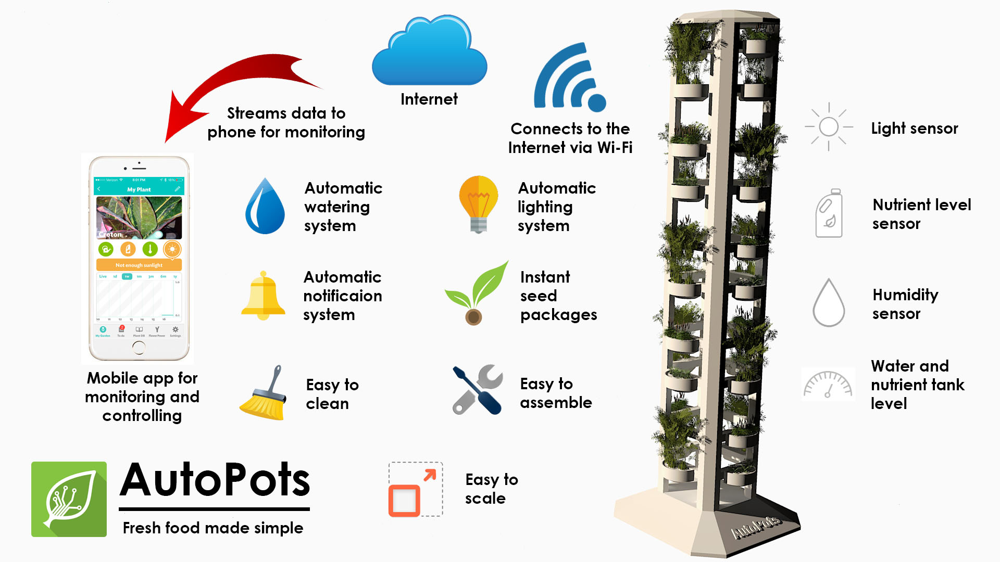
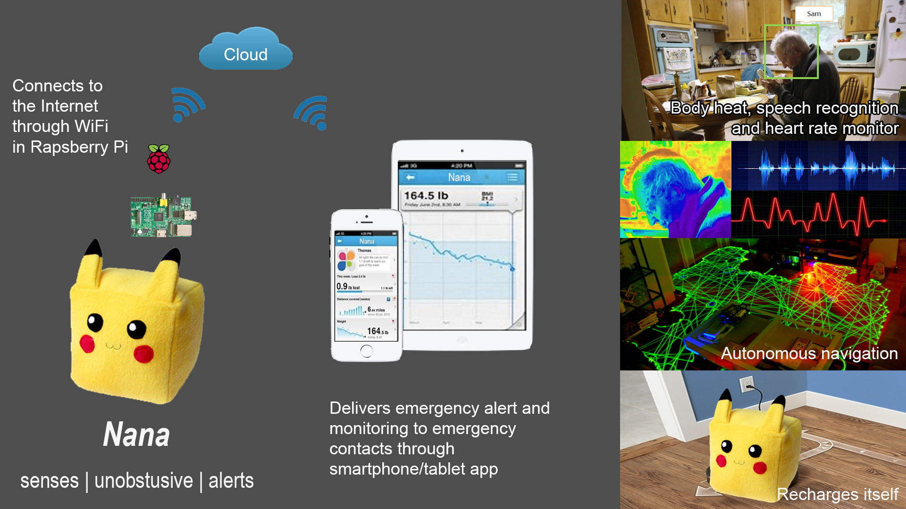

Welcome to my personal site.
About Me
I am a theistic technology enthusiast who graduated with distiction from Carnegie Mellon University's Heinz College in Master of Information Systems Management program on May 2016.
I am interested in a wide variety of topics, but specifically I am passionate about technology innovation and data analytics.
Social Media


Education
Carnegie Mellon University
Master of Information Systems Management
Pittsburgh, PA
May 2015 - May 2016
Projects
Reducing Call Volume and Improving Brand Image Using Social Media
Capstone Project (Spring 2016)
- Scraped Twitter data using Python script and Twitter API.
- Extracted the sentiment and subjectivity of tweets using Python and analyzed the result.
- Analyzed Facebook data from the extracted page data.
- Developed actionable items for the client to execute such as tweeting more personalized tweets, have a mascot and tweeting more about pop culture.
Predicting Affective States of Educational Software
95-791 Data Mining (Spring 2016)
- Joined two datasets by choosing appropriate summarizing method for each column.
- Performed exploratory analysis in the joined table to find interesting parts to analyze further.
- Built predictive model to predict the affective state of students.
- Compared performance of various algorithms using cross validation and ROC curve.
Analyzing Social Media Data to Improve Blog Readership of a Digital Education Firm
94-823 Measuring Social (Fall 2015)
- Analyzed social data from social listening tool such as Brandwatch, Kairos, Comscore and Google Analytics.
- Developed strategies to increase blog readership and leverage the social media platform more.
- Presented complex data using Tableau for better visualization.
Classifying Cifar Images using Neural Network, Support Vector Machine and Naïve Bayes
10-601 Introduction to Machine Learning (Fall 2015)
- Extracted image features using VLFeat HOG algorithm.
- Coded three different classifiers to classify images: Neural Network, Support Vector Machine and Naïve Bayes.
- Tuned parameters in each classifier to achieve best result and achieved 56% accuracy using Neural Network using 5000 data training.
Genetic Algorithm Programming for Symbolic Regression
95-712 Object Oriented Programming with Java (Summer 2015)
- Create Tree Set data structure to store operator, variable and constant which forms an equation.
- Create a certain number of random trees in a generation.
- Evolve it based on the fitness for a chosen data set regression line to find the best equation that fits into the data set.
End-to-end Database Implementation using mySQL
95-703 Database Management (Summer 2015)
Swiss German University
Bachelor of Engineering, Mechatronics Engineering
Tangerang, Indonesia
Sep 2007 - May 2011
Projects
Design and Development of Kinematic System Model for Bipedal Robot
Spring 2011
- Designed mechanical system of the biped robot in Solidworks
- Simulated the mechanical design in Solidworks
- Developed kinematic system model for the biped design
- Built the biped robot based on the design
- Programmed the biped robot and compare the result with the simulation
Competition
Work Experience
Accenture
Software Engineering Analyst
Jakarta, Indonesia
Jan 2012 - Apr 2015
Projects
SAP HR Improvement at International Oil and Gas Company
Feb 2014 - Apr 2015
SAP Implementation at Subsidiary National Utility Company
Apr 2013 - Nov 2013
Capacity Building at National Utility Company
Jan 2013 - Mar 2013
SAP Rollout at Largest Mining Company
Feb 2012 - Dec 2012
Harman Automotive Division
QSG Intern
Filderstadt, Germany
Mar 2010 - Aug 2010
Ideas
AutoPots
 Finalist of McGinnis Venture Competition Poster Invite for CMU Summit 2016Website: http://autopots.club
AutoPots is an easy way to do indoor gardening. It simplifies every step of producing your own fresh fruit and vegetable in your own home.
Nana
 Winner of DiscoverCMU Robotics Case Challenge 2016Nana is a mobile health alert robot which unobstrusively monitor elders and give alerts when the elder calls for its name. It does not follow the elder in care all the time. Instead it smartly recognizes the behaviour pattern of the elder and follows only when there is a high likelihood to be an emergency case such as falling down in bathroom.
Lexi
Runner up of DiscoverCMU Robotics Case Challenge 2016 Finalist of CMU Summit Venture Competition 2016Lexi is a wearable band which helps the elderly to detect depression and send alert to emergency contact.
BusLink
Toyota Next Generation Mobility Challenge
BusLink is a combination of a smartphone app and and IoT device in the form of bus card holder. The bus card holder can change color depending on the willingness of someone in a bus to communicate.
Contact
Email: dkurniaw@andrew.cmu.edu